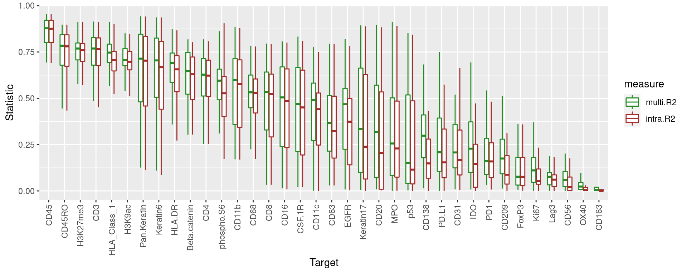
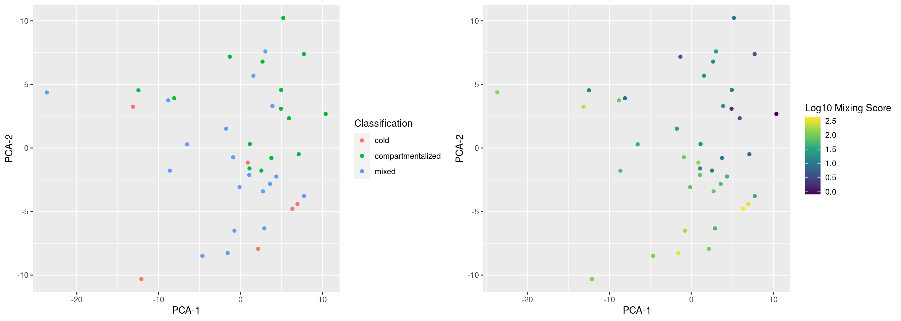
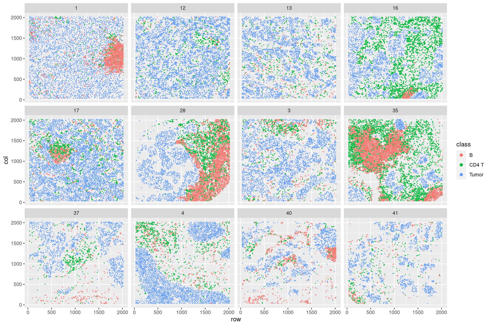
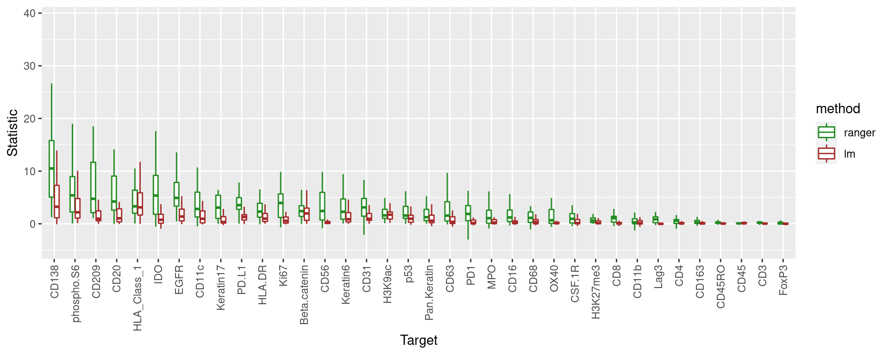

Presentation
Last updated: 2021-12-09
Checks: 6 1
Knit directory: mibi_analysis/
This reproducible R Markdown analysis was created with workflowr (version 1.6.2). The Checks tab describes the reproducibility checks that were applied when the results were created. The Past versions tab lists the development history.
Great! Since the R Markdown file has been committed to the Git repository, you know the exact version of the code that produced these results.
Great job! The global environment was empty. Objects defined in the global environment can affect the analysis in your R Markdown file in unknown ways. For reproduciblity it’s best to always run the code in an empty environment.
The command set.seed(20211011) was run prior to running the code in the R Markdown file. Setting a seed ensures that any results that rely on randomness, e.g. subsampling or permutations, are reproducible.
Great job! Recording the operating system, R version, and package versions is critical for reproducibility.
Nice! There were no cached chunks for this analysis, so you can be confident that you successfully produced the results during this run.
Using absolute paths to the files within your workflowr project makes it difficult for you and others to run your code on a different machine. Change the absolute path(s) below to the suggested relative path(s) to make your code more reproducible.
| absolute | relative |
|---|---|
| ~/Saez/mibi_analysis/ | . |
Great! You are using Git for version control. Tracking code development and connecting the code version to the results is critical for reproducibility.
The results in this page were generated with repository version bdb3ff7. See the Past versions tab to see a history of the changes made to the R Markdown and HTML files.
Note that you need to be careful to ensure that all relevant files for the analysis have been committed to Git prior to generating the results (you can use wflow_publish or wflow_git_commit). workflowr only checks the R Markdown file, but you know if there are other scripts or data files that it depends on. Below is the status of the Git repository when the results were generated:
Ignored files:
Ignored: analysis/cell.specific.results/immune.immune_s1/
Ignored: analysis/cell.specific.results/immune.immune_s10/
Ignored: analysis/cell.specific.results/immune.immune_s11/
Ignored: analysis/cell.specific.results/immune.immune_s12/
Ignored: analysis/cell.specific.results/immune.immune_s13/
Ignored: analysis/cell.specific.results/immune.immune_s14/
Ignored: analysis/cell.specific.results/immune.immune_s15/
Ignored: analysis/cell.specific.results/immune.immune_s16/
Ignored: analysis/cell.specific.results/immune.immune_s17/
Ignored: analysis/cell.specific.results/immune.immune_s18/
Ignored: analysis/cell.specific.results/immune.immune_s19/
Ignored: analysis/cell.specific.results/immune.immune_s2/
Ignored: analysis/cell.specific.results/immune.immune_s20/
Ignored: analysis/cell.specific.results/immune.immune_s21/
Ignored: analysis/cell.specific.results/immune.immune_s22/
Ignored: analysis/cell.specific.results/immune.immune_s23/
Ignored: analysis/cell.specific.results/immune.immune_s24/
Ignored: analysis/cell.specific.results/immune.immune_s25/
Ignored: analysis/cell.specific.results/immune.immune_s26/
Ignored: analysis/cell.specific.results/immune.immune_s27/
Ignored: analysis/cell.specific.results/immune.immune_s28/
Ignored: analysis/cell.specific.results/immune.immune_s29/
Ignored: analysis/cell.specific.results/immune.immune_s3/
Ignored: analysis/cell.specific.results/immune.immune_s31/
Ignored: analysis/cell.specific.results/immune.immune_s32/
Ignored: analysis/cell.specific.results/immune.immune_s33/
Ignored: analysis/cell.specific.results/immune.immune_s34/
Ignored: analysis/cell.specific.results/immune.immune_s35/
Ignored: analysis/cell.specific.results/immune.immune_s36/
Ignored: analysis/cell.specific.results/immune.immune_s37/
Ignored: analysis/cell.specific.results/immune.immune_s38/
Ignored: analysis/cell.specific.results/immune.immune_s39/
Ignored: analysis/cell.specific.results/immune.immune_s4/
Ignored: analysis/cell.specific.results/immune.immune_s40/
Ignored: analysis/cell.specific.results/immune.immune_s41/
Ignored: analysis/cell.specific.results/immune.immune_s5/
Ignored: analysis/cell.specific.results/immune.immune_s6/
Ignored: analysis/cell.specific.results/immune.immune_s7/
Ignored: analysis/cell.specific.results/immune.immune_s8/
Ignored: analysis/cell.specific.results/immune.immune_s9/
Ignored: analysis/composition.analysis/
Ignored: analysis/notumor.composition.analysis/
Ignored: analysis/red.composition.analysis/
Ignored: analysis/results/
Ignored: analysis/test/
Ignored: data/bagged_mars.RDS
Ignored: data/bgmars.RDS
Ignored: data/cancer.immune.RDS
Ignored: data/cancer.immune.results.RDS
Ignored: data/cancer.immune.views.RDS
Ignored: data/cellData.csv
Ignored: data/coord.RDS
Ignored: data/coordinates.csv
Ignored: data/earth.results.RDS
Ignored: data/expression.RDS
Ignored: data/expression_per_sample.RDS
Ignored: data/graph.clusters.RDS
Ignored: data/immune.immune.RDS
Ignored: data/immune.immune.results.RDS
Ignored: data/immune.immune.views.RDS
Ignored: data/lboost.RDS
Ignored: data/lm.RDS
Ignored: data/lmbag.results.RDS
Ignored: data/mars.RDS
Ignored: data/meta_data.RDS
Ignored: data/mibi_coldata.RDS
Ignored: data/mibi_coord.RDS
Ignored: data/mibi_expression.RDS
Ignored: data/mibi_rowdata.RDS
Ignored: data/misty_views_smp.RDS
Ignored: data/no.tumor.compositon.RDS
Ignored: data/patient_class.csv
Ignored: data/ranger.results.RDS
Ignored: data/raw_tiffs/
Ignored: data/rf.RDS
Ignored: data/sample_meta.RDS
Ignored: data/tboost.RDS
Ignored: data/tumor.immune.contacts.RDS
Ignored: old_files/
Untracked files:
Untracked: analysis/MIBI_Analysis_Helpers.Rmd
Note that any generated files, e.g. HTML, png, CSS, etc., are not included in this status report because it is ok for generated content to have uncommitted changes.
These are the previous versions of the repository in which changes were made to the R Markdown (analysis/Presentation.Rmd) and HTML (docs/Presentation.html) files. If you’ve configured a remote Git repository (see ?wflow_git_remote), click on the hyperlinks in the table below to view the files as they were in that past version.
| File | Version | Author | Date | Message |
|---|---|---|---|---|
| Rmd | bdb3ff7 | schae211 | 2021-12-09 | wflow_publish(all = TRUE, republish = TRUE) |
| html | 4c29dbc | schae211 | 2021-10-28 | Build site. |
| Rmd | da81c1c | schae211 | 2021-10-28 | workflowr::wflow_publish(files = “analysis/Presentation.Rmd”) |
| html | f040441 | schae211 | 2021-10-28 | Build site. |
| Rmd | 5161309 | schae211 | 2021-10-28 | workflowr::wflow_publish(files = “analysis/Presentation.Rmd”) |
| Rmd | 7302426 | schae211 | 2021-10-27 | adding importance signature |
| html | 7302426 | schae211 | 2021-10-27 | adding importance signature |
| html | 28ffc8b | schae211 | 2021-10-27 | Build site. |
| Rmd | ddd6715 | schae211 | 2021-10-27 | some new figures in appendix |
| html | 5ccce68 | schae211 | 2021-10-27 | Build site. |
| Rmd | eae25dc | schae211 | 2021-10-27 | created presentation |
| html | 208354f | schae211 | 2021-10-26 | Build site. |
| html | d06675c | schae211 | 2021-10-26 | Build site. |
| html | 4dd0190 | schae211 | 2021-10-25 | Build site. |
| Rmd | 784b5c1 | schae211 | 2021-10-25 | refactoring |
| html | b858544 | schae211 | 2021-10-25 | Build site. |
| html | 6ac65aa | schae211 | 2021-10-23 | Build site. |
| html | b9bdcf8 | schae211 | 2021-10-22 | Build site. |
| html | 6515710 | schae211 | 2021-10-22 | Build site. |
| Rmd | 5927843 | schae211 | 2021-10-22 | hiding code |
| html | 4df87c6 | schae211 | 2021-10-22 | Build site. |
| html | 8cb127d | schae211 | 2021-10-21 | Build site. |
| html | b575d1a | schae211 | 2021-10-21 | Build site. |
| html | d93e752 | schae211 | 2021-10-20 | Build site. |
| html | ef76a7d | schae211 | 2021-10-20 | Build site. |
| html | 35c3b36 | schae211 | 2021-10-20 | Build site. |
| html | 9472222 | schae211 | 2021-10-20 | blank presentation |
| Rmd | c73137c | schae211 | 2021-10-20 | immune-immune analysis included |
What is MISTy?
MISTy is an explainable machine learning framework to probe intra- and intercellular marker interactions.
Assuming we have different markers (proteins, transcripts, etc.).
1. Question: Can we predict the expression of marker X using the information about the expression of other markers within the same cell (juxtaview)
2. Question: Does our prediction improve if we take the expression of the other markers in the spatial context into consideration?
- Thereby we can define spatial context flexibly, meaning only the direct neighbors (juxtaview) or the broader tissue (paraview), (or actually any other view you could think of).
3. Question: What kind of spatial context is important to improve our prediction?
4. Question: Which other markers are helpful to predict the expression of marker X?
If another marker Y is important to predict the expression of markers, there is some sort of relationship between the markers (which has neither to be causal nor linear!).
All of this should get more clear when I show some results.

Basic MISTy Workflow
- For each target, first the variance explained (R2) is computed using only intracellular information (intraview, here brown) and then information from the spatial context (multiview, here green).
ranger.results$improvements %>%
filter(measure %in% c("intra.R2", "multi.R2")) %>%
mutate(measure = factor(measure, levels = c("multi.R2", "intra.R2"))) %>%
ggplot() +
geom_boxplot(aes(x=reorder(target, -value), y=value, col=measure),
width=.6, outlier.shape = NA) +
theme(axis.text.x = element_text(angle = 90, hjust = 1, vjust = .5)) +
labs(y = "Statistic", x = "Target") +
scale_color_manual(values = c("multi.R2" = "forestgreen",
"intra.R2" = "brown"))
If the R2 values for the multiview (gain.R2) is higher, this shows that taking the spatial context (expression of all other markers in the neighboring cells) has predictive power for the target.
Thus, we will look at the gain in explained variance across all targets and samples (see errorbars).
plot_improvement_stats(ranger.results, "gain.R2")
Which spatial context is more important?
We might also be interested in whether the direct neighbors (juxtaview) or the broad spatial context (paraview) are more important?
And most often we see that the broader spatial context (paraview) is more important than the local cellular niche (juxtaview).
plot_view_contributions(ranger.results)
Which factors drive the heterogentiy in the performance?
Furthermore, we could ask why there is a large variability between the samples in the gain in R2 for the different target. What drives those differences?
To answer this question we can look at the performance signature, which is a collection of all performance measures for each target.
ranger.perf.sig <- mistyR::extract_signature(ranger.results, "performance")
ranger.perf.sig %>%
mutate(sample = str_extract(sample, "(?<=_s)[0-9]+")) %>%
mutate_if(is.numeric, round, digits=2)- Doing a PCA on this performance signature clearly shows that MISTy performance is driven by the tumor structure.
ranger.perf.pca <- stats::prcomp(ranger.perf.sig %>% select(-sample))
p1 <- ggplot() +
geom_point(aes(x=ranger.perf.pca$x[,1], y=ranger.perf.pca$x[,2],
col=factor(meta.smp$Classification))) +
labs(col = "Classification", x="PCA-1", y="PCA-2")
p2 <- ggplot() +
geom_point(aes(x=ranger.perf.pca$x[,1],
y=ranger.perf.pca$x[,2],
col=log10(meta.smp$ratio.tumor.immune))) +
scale_color_viridis_c() +
labs(col = "Log10 Mixing Score", x="PCA-1", y="PCA-2")
gridExtra::grid.arrange(p1, p2, ncol=2)
Alternatively one could look at the boxplot containing all gain R2 values.
Especially for cold tumors, the gains in R2 are rather low and according to the plot the overall differences between compartmentalized and mixed tumors are not too big.
ranger.results$improvements %>%
filter(measure == "gain.R2") %>%
mutate(sample = str_extract(sample, "(?<=_s)[0-9]+")) %>%
left_join(meta.smp, by=c("sample" = "SampleID")) %>%
ggplot() +
geom_boxplot(aes(x=Classification, y=value, col=Classification)) +
scale_color_manual(values = c("cold" = "red",
"compartmentalized" = "forestgreen",
"mixed" = "blue")) +
labs(y = "Gain R2")
For which targets is the gain in R2 in significantly different?
So for which targets is the gain in R2 different between compartmentalized and mixed samples? Meaning for the prediction of which targets is it important whether the special context comprises a structured or unstructured TME?
On top we can see the targets for which the gain in R2 is significantly different between compartmentalized and mixed samples. On the bottom the multi R2 (total explained variance) is shown.
tmp <- ranger.results$improvements %>%
filter(measure == "gain.R2") %>%
mutate(sample = str_extract(sample, "(?<=_s)[0-9]+")) %>%
left_join(meta.smp, by=c("sample" = "SampleID"))
targets <- tmp$target %>% unique
# t.test for all targets
all.targets <- map(targets, function(t) {
tmp <- ranger.results$improvements %>%
filter(measure == "gain.R2") %>%
mutate(sample = str_extract(sample, "(?<=_s)[0-9]+")) %>%
left_join(meta.smp, by=c("sample" = "SampleID")) %>%
filter(target == t)
test.results <- t.test(x = (tmp %>% filter(Classification=="compartmentalized") %>%
pull(value)),
y = (tmp %>% filter(Classification=="mixed") %>%
pull(value)),
alternative = "two.sided")
list("target" = t, "t.test" = test.results)
})
# looking at the boxplots for each target
sign.targets <- map(all.targets, function(target.test) {
if (target.test$t.test$p.value < 0.05) {
return(target.test$target)
}
}) %>% unlist
ranger.results$improvements %>%
filter(measure == "gain.R2") %>%
mutate(measure = ifelse(measure == "gain.R2",
"Gain Explained Variance (R2) [%]",
"Total Explained Variance (R2)")) %>%
mutate(sample = str_extract(sample, "(?<=_s)[0-9]+")) %>%
left_join(meta.smp, by=c("sample" = "SampleID")) %>%
filter(target %in% sign.targets) %>%
filter(Classification != "cold") %>%
mutate(Classification = factor(Classification)) %>%
ggplot() +
geom_boxplot(aes(x=target, y=value, col=Classification)) +
scale_color_manual(values = c("compartmentalized" = "forestgreen", "mixed" = "blue"))
What interactions drive these differenes?
But what kind of interactions could explain those differences? Which other markers are important for the prediction of those targets?
Let’s look at the importances of the paraview for these targets in compartmentalized and mixed samples.
cutoff = 0.5
df <- ranger.results$importances %>%
mutate(sample = str_extract(sample, "(?<=_s)[0-9]+")) %>%
left_join(meta.smp, by=c("sample" = "SampleID")) %>%
filter(Target %in% sign.targets) %>%
filter(Classification != "cold") %>%
group_by(Classification, view, Predictor, Target) %>%
summarise(m.imp = mean(Importance), .groups="drop") %>%
filter(view == "para.120") %>%
mutate(Importance = ifelse(m.imp < cutoff, 0, m.imp))
clean.predictors <- df %>%
group_by(Predictor) %>%
summarise(test = sum(Importance)) %>%
filter(test > 1e-3) %>%
pull(Predictor)
df %>%
filter(Predictor %in% clean.predictors) %>%
ggplot(., aes(x = Predictor,y = Target)) +
geom_tile(aes(fill = Importance), color = "black") +
scale_fill_gradient2(low = "white", mid = "white", high = "#8DA0CB", midpoint = cutoff) +
theme(axis.text.x = element_text(angle = 90, hjust = 1, vjust = .5)) +
coord_equal() +
facet_wrap(~ Classification, ncol=1)
- Now we could also condense this down and only look at the contrast.
cutoff <- 0.5
ranger.results$importances %>%
mutate(sample = str_extract(sample, "(?<=_s)[0-9]+")) %>%
left_join(meta.smp, by=c("sample" = "SampleID")) %>%
filter(Target %in% sign.targets) %>%
filter(Classification != "cold") %>%
group_by(Classification, view, Predictor, Target) %>%
summarise(Importance = mean(Importance), .groups="drop") %>%
filter(view == "para.120") %>%
filter(Predictor %in% clean.predictors) %>%
pivot_wider(names_from=Classification, values_from=Importance) %>%
group_by(Predictor, Target) %>%
summarise(c = sum(compartmentalized, na.rm = TRUE), m = sum(mixed, na.rm = TRUE),
.groups="drop") %>%
mutate(Contrast.Compartmentalized.Mixed = c - m,
Contrast.Mixed.Compartmentalized = m -c) %>%
mutate(Contrast.Compartmentalized.Mixed =
ifelse(Contrast.Compartmentalized.Mixed < cutoff, 0,
Contrast.Compartmentalized.Mixed)) %>%
mutate(Contrast.Mixed.Compartmentalized =
ifelse(Contrast.Mixed.Compartmentalized < cutoff, 0,
Contrast.Mixed.Compartmentalized)) %>%
pivot_longer(cols = starts_with("Contrast"), values_to="Importance") %>%
mutate(name = ifelse(name == "Contrast.Compartmentalized.Mixed",
"Contrast: Compartmenalized - Mixed",
"Contrast: Mixed - Compartimenalized")) %>%
ggplot(., aes(x = Predictor,y = Target)) +
geom_tile(aes(fill = Importance), color = "black") +
scale_fill_gradient2(low = "white", mid = "white", high = "#8DA0CB", midpoint = cutoff) +
facet_wrap(~ name, ncol=1) +
theme(axis.text.x = element_text(angle = 90, hjust = 1, vjust = .5)) +
coord_equal()
- For example EGFR and FoxP3 are more important for prediction of these targets in mixed samples, whereas CD45 is more important in compartmentalized samples.
Neighborhood Composition Analysis
Since MISTy is a flexible framework, I want to give another short example how we can use MISTy to predict the identity of cells using the identity of the 50 nearest-neighbor of a cell.
Here I excluded Tumor cells and cells which are not really present in every sample.
Let’s start again by looking at the gain in R2.
notumor.misty.results <- readRDS("data/no.tumor.compositon.RDS")
plot_improvement_stats(notumor.misty.results, "gain.R2")
- As expecpted these results are driven by the tumor structure:
notumor.misty.results$improvements %>%
mutate(sample = str_extract(sample, "(?<=smp.)[0-9]+")) %>%
filter(measure == "gain.R2") %>%
left_join(meta.smp, by=c("sample" = "SampleID")) %>%
ggplot() +
geom_boxplot(aes(x=target, y=value, col=Classification)) +
theme(axis.text.x = element_text(angle = 90, hjust = 1)) +
scale_color_manual(values = c("compartmentalized" = "forestgreen",
"mixed" = "blue"))
But in general what kind of interactions explain those results?
We can see kind of see there is a structure in the immune response. The levels of macrophages are informative about the presence/absense of other cell types (also macrophages are by far the most abundant immune cell type).
However, interpreting this plot is not straight forward as those interaction can be very complex (non-linear)
plot_interaction_heatmap(notumor.misty.results, "para.50", cutoff = 0)
For example we see the mutual interaction between CD4 T-cells and B-cells, which we could investigate by actually looking at the samples (which have rather high numbers of both cell types).
It seems like there is some coordinated though not in all samples!
df <- meta %>%
group_by(SampleID) %>%
count(immuneGroup) %>%
ungroup() %>%
pivot_wider(names_from=immuneGroup, values_from=n)
q75_cd4 <- quantile(df$`CD4 T`, .6, na.rm=TRUE)
q75_b <- quantile(df$B, .6, na.rm=TRUE)
sample.oi <- df %>%
filter(`CD4 T` >= q75_cd4, B >= q75_b) %>%
pull(SampleID)
meta %>%
mutate(SampleID = as.character(SampleID)) %>%
left_join(meta.smp, by="SampleID") %>%
filter(SampleID %in% sample.oi) %>%
mutate(class = case_when(
Group %in% c("Keratin-positive tumor", "Tumor") ~ "Tumor",
!(immuneGroup %in% c("B", "CD4 T")) ~ "Ignore",
TRUE ~ immuneGroup
)) %>%
filter(class != "Ignore") %>%
ggplot() +
geom_point(aes(x=row, y=col, col=class), size=.1) +
facet_wrap(~ SampleID, ncol=4) +
guides(colour = guide_legend(override.aes = list(size = 2)))
Cell Type Specific Analysis
Another use case might be to probe the interactions between certain cell types.
For example predicting the expression of markers in immune cells using information from the tumor cell in the broader tissue structure (paraview).
Tumor -> Immune
We can see again that the expression of the tumor cells are informative.
We also see that there is quite some gain in variance explained for IDO, PD_L1 and PD1, so which interactions could explain that?
plot_improvement_stats(cancer.immune.results, "gain.R2")
Thus, we will have a look at the corresponding importances.
There is no single important predictor, rather many predictors are important for every immuno-regulatory proteins
But some predictors are specific, such as EGFR for PD-L1.
cutoff = 0
cancer.immune.results$importances %>%
mutate(sample = str_extract(sample, "(?<=_s)[0-9]+")) %>%
left_join(meta.smp, by=c("sample" = "SampleID")) %>%
filter(Target %in% c("IDO", "PD.L1", "PD1", "Lag3")) %>%
group_by(Classification, view, Predictor, Target) %>%
summarise(m.imp = mean(Importance), .groups="drop") %>%
filter(view == "c.para.120") %>%
mutate(Importance = ifelse(m.imp < cutoff, 0, m.imp)) %>%
ggplot(., aes(x = Predictor,y = Target)) +
geom_tile(aes(fill = Importance), color = "black") +
scale_fill_gradient2(low = "white", mid = "white", high = "#8DA0CB", midpoint = cutoff) +
theme(axis.text.x = element_text(angle = 90, hjust = 1, vjust = .5)) +
coord_equal()
And we could actually ask the same question when looking at the interaction of immune cells.
What kind of interactions explain
Immune -> Immune
What kind of interactions are important between immune cells?
For example PD1 expression is helpful to predict Lag3 expression.
cutoff = 0
immune.immune.results$importances %>%
mutate(sample = str_extract(sample, "(?<=_s)[0-9]+")) %>%
left_join(meta.smp, by=c("sample" = "SampleID")) %>%
filter(Target %in% c("IDO", "PD.L1", "PD1", "Lag3")) %>%
group_by(Classification, view, Predictor, Target) %>%
summarise(m.imp = mean(Importance), .groups="drop") %>%
filter(view == "i.para.120") %>%
mutate(Importance = ifelse(m.imp < cutoff, 0, m.imp)) %>%
ggplot(., aes(x = Predictor,y = Target)) +
geom_tile(aes(fill = Importance), color = "black") +
scale_fill_gradient2(low = "white", mid = "white", high = "#8DA0CB", midpoint = cutoff) +
theme(axis.text.x = element_text(angle = 90, hjust = 1, vjust = .5)) +
coord_equal()
Thoughts
We are happy to collaborate
Since MISTy was rather developed to probe intra- and especially intercellular interactions it would be helpful to have more markers that help to decipher pathway activity and expression of ligands.
How does the site/location in the solid tumor where the sample is taken from influence the sample-to-sample heterogeneity? Did you by now had a look at similar samples, and are the effects you saw preserved across different sites in the same patient?
Appendix
- Interestingly the prediction of the other immuno-regulatory proteins apart from PD-1 did not depend on the tumor structure.
ranger.results$improvements %>%
filter(measure == "gain.R2") %>%
mutate(sample = str_extract(sample, "(?<=_s)[0-9]+")) %>%
left_join(meta.smp, by=c("sample" = "SampleID")) %>%
filter(target %in% c("IDO", "PD.L1", "PD1", "Lag3")) %>%
filter(Classification != "cold") %>%
ggplot() +
geom_boxplot(aes(x=target, y=value, col=Classification)) +
scale_color_manual(values = c("compartmentalized" = "forestgreen", "mixed" = "blue")) +
labs(x = "Target", y = "Gain Explained Variance (R2)")
- One could also run MISTy with linear models as base learner in a bagged to to increase interpretability. Though this strongly reduced the variance that can be explained.
df1 <- ranger.results$improvements %>%
filter(measure == "gain.R2") %>%
mutate(method = "ranger")
df2 <- lmbag.results$improvements %>%
filter(measure == "gain.R2") %>%
mutate(method = "lm")
rbind(df1, df2) %>%
mutate(method = factor(method, levels = c("ranger", "lm"))) %>%
ggplot() +
geom_boxplot(aes(x=reorder(target, -value), y=value, col=method),
outlier.shape = NA, width = .5) +
theme(axis.text.x = element_text(angle = 90, hjust = 1, vjust = .5)) +
labs(y = "Statistic", x = "Target") +
scale_color_manual(values = c("ranger" = "forestgreen",
"lm" = "brown"))
- The interactions we have looked at before.
cutoff = 0.5
lmbag.results$importances %>%
mutate(sample = str_extract(sample, "(?<=_s)[0-9]+")) %>%
left_join(meta.smp, by=c("sample" = "SampleID")) %>%
filter(Target %in% sign.targets) %>%
filter(Classification != "cold") %>%
group_by(Classification, view, Predictor, Target) %>%
summarise(m.imp = mean(Importance), .groups="drop") %>%
filter(view == "para.120") %>%
mutate(Importance = ifelse(m.imp < cutoff, 0, m.imp)) %>%
ggplot(., aes(x = Predictor,y = Target)) +
geom_tile(aes(fill = Importance), color = "black") +
scale_fill_gradient2(low = "white", mid = "white", high = "#8DA0CB", midpoint = cutoff) +
theme(axis.text.x = element_text(angle = 90, hjust = 1, vjust = .5)) +
coord_equal() +
facet_wrap(~ Classification, ncol=1)
- The grades are not really associated with the performance signature of MISTy in contrast to the tumor structure as seen before.
p1 <- ggplot() +
geom_point(aes(x=ranger.perf.pca$x[,1], y=ranger.perf.pca$x[,2],
col=factor(meta.smp$GRADE))) +
labs(col = "Grade", x="PCA-1", y="PCA-2")
p2 <- ggplot() +
geom_point(aes(x=ranger.perf.pca$x[,1], y=ranger.perf.pca$x[,2],
col=factor(meta.smp$STAGE))) +
labs(col = "Stage", x="PCA-1", y="PCA-2")
p3 <- ggplot() +
geom_point(aes(x=ranger.perf.pca$x[,1], y=ranger.perf.pca$x[,2],
col=factor(meta.smp %>%
mutate(STAGE = substring(STAGE, 1, 1)) %>%
pull(STAGE)))) +
labs(col = "red. Stage", x="PCA-1", y="PCA-2")
p4 <- ggplot() +
geom_point(aes(x=ranger.perf.pca$x[,1], y=ranger.perf.pca$x[,2],
col=(meta.smp %>%
mutate(TIL_score = ifelse(TIL_score %in% c("NA", "NaN"),
NA, TIL_score)) %>% pull(TIL_score) %>%
as.numeric()))) +
labs(col = "TIL Score", x="PCA-1", y="PCA-2") +
scale_color_viridis_c()
gridExtra::grid.arrange(p1, p2, p3, p4, ncol=2)
| Version | Author | Date |
|---|---|---|
| f040441 | schae211 | 2021-10-28 |
- But what about the importance signatures? I am not quite sure whether there are patterns, once could argue about the grade I guess.
ranger.imp.sig <- mistyR::extract_signature(ranger.results, "importance")
ranger.imp.pca <- stats::prcomp(ranger.imp.sig %>% select(-sample))
p1 <- ggplot() +
geom_point(aes(x=ranger.imp.pca$x[,1], y=ranger.imp.pca$x[,2],
col=factor(meta.smp$GRADE))) +
labs(col = "Grade", x="PCA-1", y="PCA-2")
p2 <- ggplot() +
geom_point(aes(x=ranger.imp.pca$x[,1], y=ranger.imp.pca$x[,2],
col=factor(meta.smp$STAGE))) +
labs(col = "Stage", x="PCA-1", y="PCA-2")
p3 <- ggplot() +
geom_point(aes(x=ranger.imp.pca$x[,1], y=ranger.imp.pca$x[,2],
col=factor(meta.smp %>%
mutate(STAGE = substring(STAGE, 1, 1)) %>%
pull(STAGE)))) +
labs(col = "red. Stage", x="PCA-1", y="PCA-2")
p4 <- ggplot() +
geom_point(aes(x=ranger.imp.pca$x[,1], y=ranger.imp.pca$x[,2],
col=meta.smp %>%
mutate(TIL_score = ifelse(TIL_score %in% c("NA", "NaN"),
NA, TIL_score)) %>% pull(TIL_score) %>%
as.numeric())) +
labs(col = "TIL Score", x="PCA-1", y="PCA-2") +
scale_color_viridis_c()
gridExtra::grid.arrange(p1, p2, p3, p4, ncol=2)
| Version | Author | Date |
|---|---|---|
| f040441 | schae211 | 2021-10-28 |
sessionInfo()
R version 4.1.2 (2021-11-01)
Platform: x86_64-pc-linux-gnu (64-bit)
Running under: Ubuntu 20.04.3 LTS
Matrix products: default
BLAS: /usr/lib/x86_64-linux-gnu/blas/libblas.so.3.9.0
LAPACK: /usr/lib/x86_64-linux-gnu/lapack/liblapack.so.3.9.0
locale:
[1] LC_CTYPE=en_US.UTF-8 LC_NUMERIC=C
[3] LC_TIME=en_US.UTF-8 LC_COLLATE=en_US.UTF-8
[5] LC_MONETARY=en_US.UTF-8 LC_MESSAGES=en_US.UTF-8
[7] LC_PAPER=en_US.UTF-8 LC_NAME=C
[9] LC_ADDRESS=C LC_TELEPHONE=C
[11] LC_MEASUREMENT=en_US.UTF-8 LC_IDENTIFICATION=C
attached base packages:
[1] stats graphics grDevices utils datasets methods base
other attached packages:
[1] factoextra_1.0.7 forcats_0.5.1 stringr_1.4.0 dplyr_1.0.7
[5] purrr_0.3.4 readr_2.0.2 tidyr_1.1.4 tibble_3.1.5
[9] ggplot2_3.3.5 tidyverse_1.3.1 future_1.22.1 mistyR_1.3.1
[13] workflowr_1.6.2
loaded via a namespace (and not attached):
[1] httr_1.4.2 sass_0.4.0 jsonlite_1.7.2 viridisLite_0.4.0
[5] modelr_0.1.8 bslib_0.3.1 assertthat_0.2.1 highr_0.9
[9] cellranger_1.1.0 yaml_2.2.1 ggrepel_0.9.1 globals_0.14.0
[13] pillar_1.6.3 backports_1.3.0 glue_1.4.2 digest_0.6.28
[17] RColorBrewer_1.1-2 promises_1.2.0.1 rvest_1.0.1 colorspace_2.0-2
[21] htmltools_0.5.2 httpuv_1.6.3 pkgconfig_2.0.3 broom_0.7.9
[25] listenv_0.8.0 haven_2.4.3 scales_1.1.1 whisker_0.4
[29] later_1.3.0 tzdb_0.1.2 git2r_0.28.0 generics_0.1.0
[33] farver_2.1.0 ellipsis_0.3.2 withr_2.4.2 cli_3.0.1
[37] magrittr_2.0.1 crayon_1.4.1 readxl_1.3.1 evaluate_0.14
[41] fs_1.5.0 fansi_0.5.0 parallelly_1.28.1 xml2_1.3.2
[45] tools_4.1.2 hms_1.1.1 lifecycle_1.0.1 munsell_0.5.0
[49] reprex_2.0.1 compiler_4.1.2 jquerylib_0.1.4 rlang_0.4.12
[53] grid_4.1.2 rstudioapi_0.13 labeling_0.4.2 rmarkdown_2.11
[57] gtable_0.3.0 codetools_0.2-18 DBI_1.1.1 R6_2.5.1
[61] gridExtra_2.3 lubridate_1.8.0 knitr_1.36 fastmap_1.1.0
[65] utf8_1.2.2 rprojroot_2.0.2 stringi_1.7.5 parallel_4.1.2
[69] Rcpp_1.0.7 vctrs_0.3.8 dbplyr_2.1.1 tidyselect_1.1.1
[73] xfun_0.26